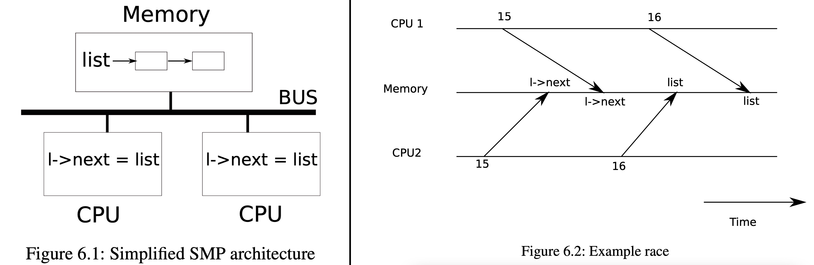

Xv6 Locking
Locking
Learning xv6-riscv-book Chapter 5 Locking
Concurrency: situations in which multiple instruction sreams are interleaved, due to multiprocessor parallelism, threasd switching, or interrupts.
Concurrency control: strategies aimed at correctness under concurrency.
Lock: provides mutual exclusion – ensurign that only one CPU at a time can hold the lock.
Race conditions
Race condition:
- a memory location is accessed concurrently
- at list one write
E.g. two CPUs execute list.push at the same time:
1 | struct element { |

race condition -> offen bug:
- lost update
- read incompletely-updated data
To avoid races -> use a lock:
1 | ... |
between acquire and release: critical section.
- only one CPU at a time can operate on the data structure in the critical section.
- locks limit performance: locks reduce parallelism:
- conflict
- contention
(A major challenge in kernel design is to avoid lock contention)
Locks
Xv6 has two types of locks:
- spinlocks
- sleep-locks
spinlocks
1 | struct spinlock { |
acquire:
use __sync_lock_test_and_set:
- amoswap
lk->lockedand1 - return: old(swapped) contents of
lk->locked
1 | void |
release:
use __sync_lock_release:
- atomic
lk->locked = 0
1 | void |
Using locks
- any time a variable can be written by one CPU at the same time that another CPU can read or write it, a lock should be used
- locks protect invariants: if an invariant involves multiple memory locations, typically all of them need to be protected by a single lock to ensure the invariant is maintained
- not to lock too much (for efficiency)
Deadlock and lock ordering
hold serveral locks at the same time:
- IMPORTANT: all code paths acquire those locks in the same order => lock-order chains
- ORTHERWISE: risk of deadlock
global deadlock-avoiding order: difficult!
Locks and interrut handlers
Some xv6 spinlocks protect data that is used by both threads and interrupt handlers:
- To avoid deadlock: when a CPU acquires any lock, xv6 always disables interrupts on that CPU.
push_offin acquire &pop_offin release
Instruction and memory ordering
Compiler & CPU may do instruction re-orderings for performance.
Re-ordering can easily lead to incorrect behavior on multiprocessors.
To tell hardware and compiler not to perform such re-ordering:
- Xv6 uses
__sync_synchronize(): a memory barrier
Sleep locks
To hold a lock for a long time – use sleep lock
e.g. file system keeps a file locked while reading & writing its content on the disk.
sleep-locks:
- acquiresleep: yields CPU while waiting
- releasesleep
Notice:
- sleep-locks leave interrupts enable: cannot be used in interrupt handlers.
- sleep-locks may yield the CPU: cannot be used inside spinlock critical sections
CDFMLR 2021.04.08
顶部图片来自于小歪API，系随机选取的图片，仅用于检测屏幕显示的机械、光电性能，与文章的任何内容及观点无关，也并不代表本人局部或全部同意、支持或者反对其中的任何内容及观点。如有侵权，联系删除。